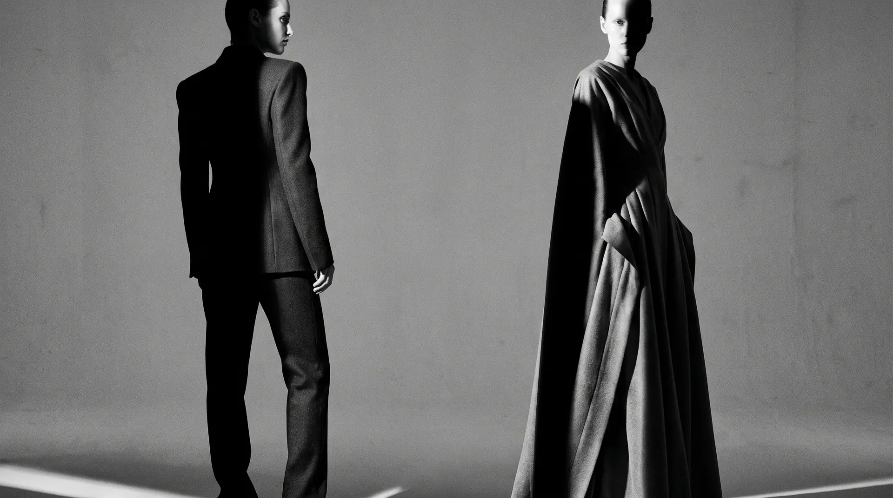

There is no such thing as a standard body. There is no reason a dress should be standard either.
I draft, fit and finish every garment myself, for the person who will wear it. Nothing here was made for a size first and adjusted afterwards.


Start with a conversation
The first conversation is free, and nothing is decided in it. Tell me roughly what you have in mind — a date, an occasion, a photograph you keep coming back to.
By appointment only · Currently Amsterdam · Online meetings welcome